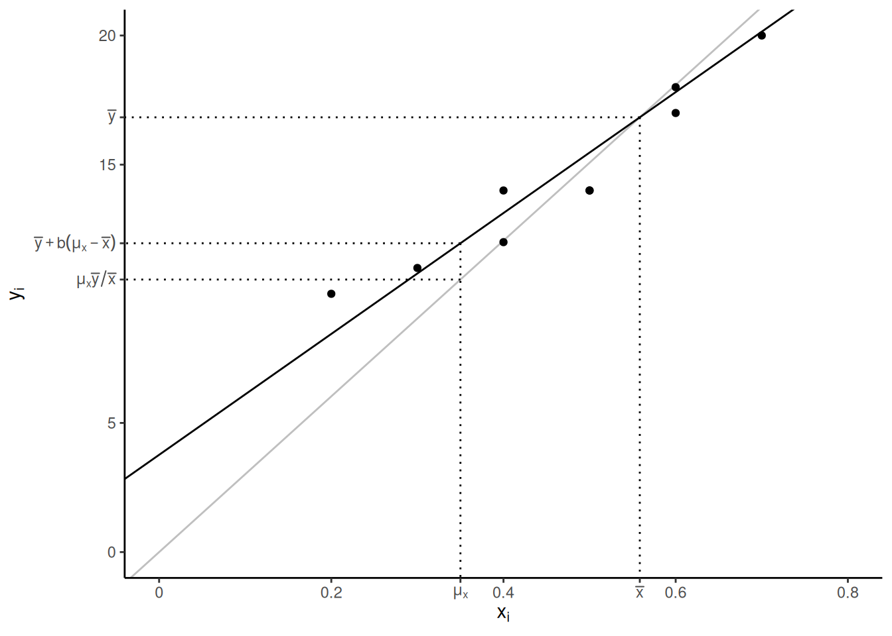
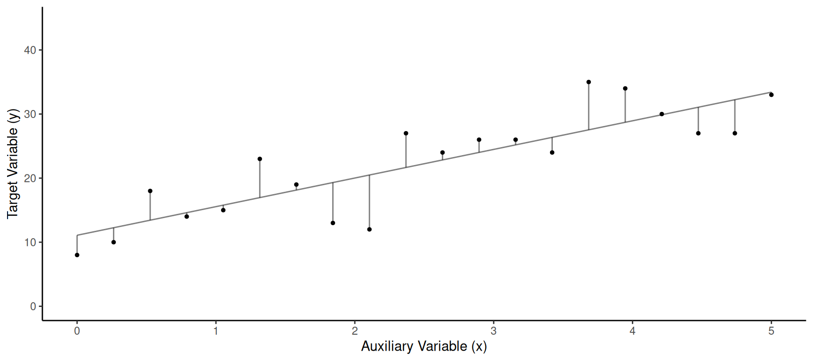
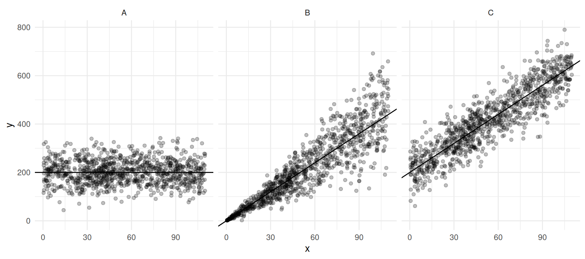
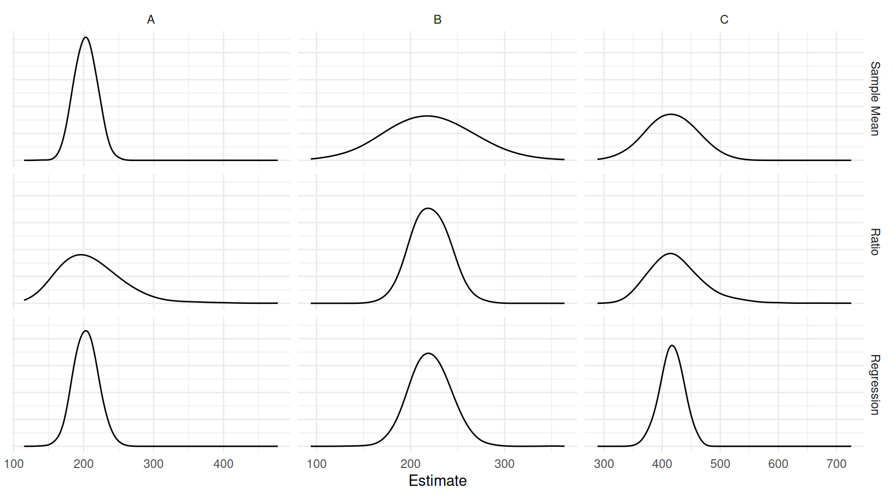
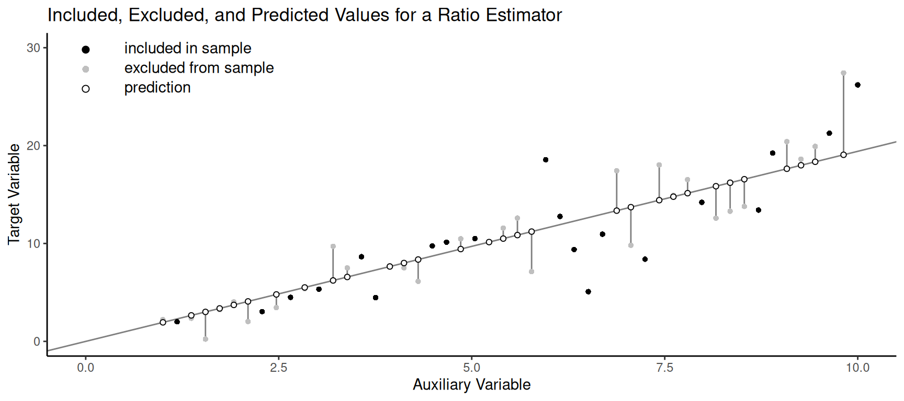

You can also download a PDF copy of this lecture.
Assume a simple random sampling design. The regression estimator of \(\mu_y\) is \[ \hat\mu_y = \bar{y} + b(\mu_x - \bar{x}). \] The regression estimator of \(\tau_y\) is \(N\) times this estimator: \[ \hat\tau_y = N\bar{y} + b(\tau_x - N\bar{x}). \] In both estimators \(b = \hat\rho s_y/s_x\), where \(\hat\rho\) is the correlation between the target and auxiliary variable for the elements in the sample, \(s_y\) is the standard deviation of the target variable for the elements in the sample, and \(s_x\) is the standard deviation of the auxiliary variable for the elements in the sample.
The regression estimator for \(\mu_y\) can also be written as \[ \hat\mu_y = \underbrace{\bar{y} - b\bar{x}}_a + b\mu_x = a + b\mu_x, \] where \(a = \bar{y}-b\bar{x}\) and \(b = \hat\rho s_y/s_x\) are the intercept and slope, respectively, of a regression line. Contrast this with the ratio estimator for \(\mu_y\) which can be written as \(\hat\mu_y = r\mu_x\), which is based on a different regression line that has an intercept of zero.1

Assuming simple random sampling, the estimated variance of \(\hat\mu_y = \bar{y} + b(\mu_x - \bar{x})\) can be written as \[ \hat{V}(\hat\mu_y) = \left(1 - \frac{n}{N}\right)\frac{\sum_{i \in \mathcal{S}}(y_i - a - bx_i)^2/(n-2)}{n}. \] The term \(\sum_{i \in \mathcal{S}} (y_i - a - bx_i)^2\) can also be computed as \(\sum_{i \in \mathcal{S}} (y_i - a - bx_i)^2 = (n-1)s_y^2(1-\hat\rho^2)\), which shows that it gets smaller as the correlation gets larger (in absolute value).
The estimated variance of \(\hat\tau_y = N\bar{y} + b(\tau_x - N\bar{x})\) is then \[ \hat{V}(\hat\tau_y) = N^2\left(1 - \frac{n}{N}\right)\frac{\sum_{i \in \mathcal{S}}(y_i - a - bx_i)^2/(n-2)}{n}. \]
Example: The figure below show the values of the target and auxiliary variable for a sample of 20 from a population of size 100.  We have the following summary statistics: \(\bar{y}\) = 22.2, \(\bar{x}\) = 2.5, \(\mu_x\) = 3, \(s_y\) = 8.2, \(s_x\) = 1.6, and \(\hat\rho\) = 0.8. The line shown above has intercept \(a = \bar{y}-b\bar{x}\) and slope \(b = \hat\rho s_y/s_x\).
In general, how do we expect the regression estimator to perform relative to the other two estimators?
Example: Consider the following simulation study with three populations and three estimators — the sample mean \(\bar{y}\), the ratio estimator \(\mu_x\bar{y}/\bar{x}\), and the regression estimator \(\bar{y} + b(\mu_x - \bar{x})\) — applied to a sample of size \(n\) = 10 using simple random sampling.


| population | estimator | bias | variance | mse |
|---|---|---|---|---|
| A | Sample Mean | 0.86 | 241.45 | 241.96 |
| A | Ratio | 8.63 | 2000.34 | 2072.77 |
| A | Regression | 1.19 | 279.27 | 280.40 |
| B | Sample Mean | -1.24 | 1944.67 | 1944.26 |
| B | Ratio | -0.63 | 391.13 | 391.13 |
| B | Regression | -0.45 | 451.70 | 451.45 |
| C | Sample Mean | -1.24 | 1737.24 | 1737.05 |
| C | Ratio | 7.23 | 2122.31 | 2172.50 |
| C | Regression | -0.72 | 385.33 | 385.46 |
Which estimator would we prefer when?
The generalized regression estimator of \(\mu_y\) is \[ \hat\mu_y = \bar{y} + b_1(\mu_{x_1} - \bar{x}_1) + b_2(\mu_{x_2} - \bar{x}_2) + \cdots + b_k(\mu_{x_k} - \bar{x}_k) \] where \(\mu_{x_1}, \mu_{x_2}, \dots, \mu_{x_k}\) are the population means of the \(k\) auxiliary variables.
The generalized regression estimator of \(\hat\tau_y\) can be written as \[ \hat\tau_y = N\bar{y} + b_1(\tau_{x_1} - N\bar{x}_1) + b_2(\tau_{x_2} - N\bar{x}_2) + \cdots + b_k(\tau_{x_k} - N\bar{x}_k), \] where \(\tau_{x_1}, \tau_{x_2}, \dots, \tau_{x_k}\) are the population totals of the \(k\) auxiliary variables. This can also be written as \[ \hat\tau_y = N\bar{y} + b_1(\tau_{x_1} - \hat\tau_{x_1}) + b_2(\tau_{x_2} - \hat\tau_{x_2}) + \cdots + b_k(\tau_{x_k} - \hat\tau_{x_k}), \] where \(\hat\tau_{x_1} = N\bar{x}_1, \hat\tau_{x_2} = N\bar{x}_2, \dots, \hat\tau_{x_k} = N\bar{x}_k\).
We can write \(\tau_y\) as \[ \tau_y = \sum_{i \in \mathcal{S}} y_i + \sum_{i \in \mathcal{S}'} y_i, \] where \(\mathcal{S}\) denotes the set of elements included in the sample and \(\mathcal{S}'\) denotes the set of elements excluded from the sample.
Some estimators of \(\tau_y\) take the form \[ \hat\tau_y = \sum_{i \in \mathcal{S}} y_i + \sum_{i \in \mathcal{S}'} \hat{y}_i, \] where \(\hat{y}_i\) denotes a predicted value of the target variable for an element that is not in the sample. Different estimators can be derived depending on how these predicted values are computed.
Let \(\hat{y}_i = \bar{y}\), where \(\bar{y}\) is the mean of the target variable for the elements in the sample. Then it can be shown that \[ \hat\tau_y = \sum_{i \in \mathcal{S}} y_i + \sum_{i \in \mathcal{S}'} \bar{y} = N\bar{y}. \]
Let \(\hat{y}_i = rx_i\) where \(r = \bar{y}/\bar{x}\). Then it can be shown that \[ \hat\tau_y = \sum_{i \in \mathcal{S}} y_i + \sum_{i \in \mathcal{S}'} x_i\bar{y}/\bar{x} = \tau_x\bar{y}/\bar{x}. \]
Let \(\hat{y}_i = a + bx_i\). Then it can be shown that \[ \hat\tau_y = \sum_{i \in \mathcal{S}} y_i + \sum_{i \in \mathcal{S}'} (a + bx_i) = N\bar{y} + b(\tau_x - N\bar{x}). \]

Note that the corresponding estimator of \(\mu_y\) is then obtained as \(\hat\tau_y/N\). That is, \[ \hat\mu_y = \frac{1}{N}\left(\sum_{i \in \mathcal{S}} y_i + \sum_{i \in \mathcal{S}'} \hat{y}_i\right). \]
The slope and intercept for the regression estimator can
be found using standard software for ordinary least squares regression.
But note that the slope of a line corresponding to a ratio estimator is
\(\bar{y}/\bar{x}\). This is equivalent
to the slope of a regression line with no intercept estimated
using weighted least squares where the weights are the
reciprocals of the auxiliary variable values. In R this would be
something like
lm(y ~ -1 + x, weights = 1/x, data = mydata).↩︎